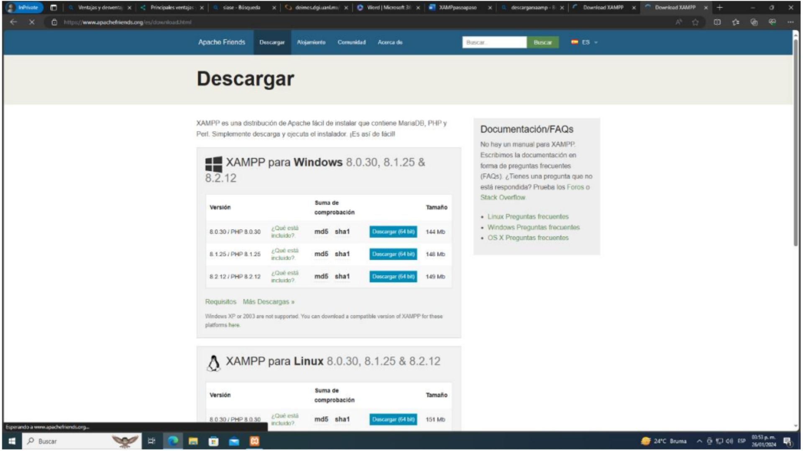
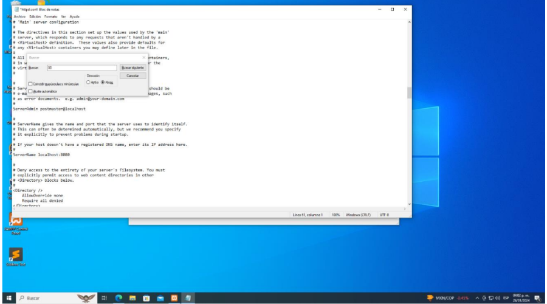

Instalación de XAMPP
Pasos para instalar XAMPP:
-
Primero iremos al buscador para poner “Descargar XAMPP” y entramos a la primera opción que nos
aparece, luego entramos al apartado para descargar, conde encontraremos distintas formas de
descargarlo dependiendo de lo que se requiera. Seleccionamos la opción de nuestra preferencia y
hacemos clic al archive .exe que se va a descargar para que comience la instalación. Le daremos
“Siguiente” a todo y esperamos hasta que se muestre la siguiente pantalla. Podemos encontrar la página en
 -
Cuando se muestre esta pantalla deberemos oprimir el botón “Config” y deberemos seleccionar la
primera opción que nos aparece ahí “Apache(httpd.conf)”. Todo este procedimiento lo haremos para
tener la salida ainternet para el puerto que nosotros utilizamos.

-
Se abre el bloc de notas y luego presionar "Ctrl + B" para abrir una pestaña de búsqueda. En esta
pestaña, se busca el carácter "80" en el texto y se reemplaza por "8080" en tres partes diferentes
del código, si es necesario. Después de hacer estos cambios, se guardan seleccionando "Archivo" y
luego "Guardar". Este proceso se repite si hay más instancias del carácter "80" que necesitan ser
modificadas.
 -
Seleccionaremos “Config” de la parte superior derecha y se abrirá este apartado en donde primero
seleccionamos Apache y MySQL en Autostart of modules, luego hacemos clic en Service and Port
Settings, nos aseguraremos que en Main Port aparezca “8080”, y si no, entonces lo agregamos y
guardamos cambios. Luego, en el apartado de SQL revisamos que en el apartado de Main Port aparezca
3306, una vez que todo esté en orden, guardamos los cambios realizados

-
Guardamos todos los cambios realizados para después hacer clic en los Start de MySQL y Apache
para comenzar con el proceso, y cuando nos aparezca una pestaña para permitir el acceso, lo
aceptamos y esperamos que todo se haya realizado y cargado correctamente.

-
Cuando hayamos finalizado los pasos anteriores, hacemos clic en “Admin” de Apache y nos deberá
de dirigir hasta esta página de XAMPP.